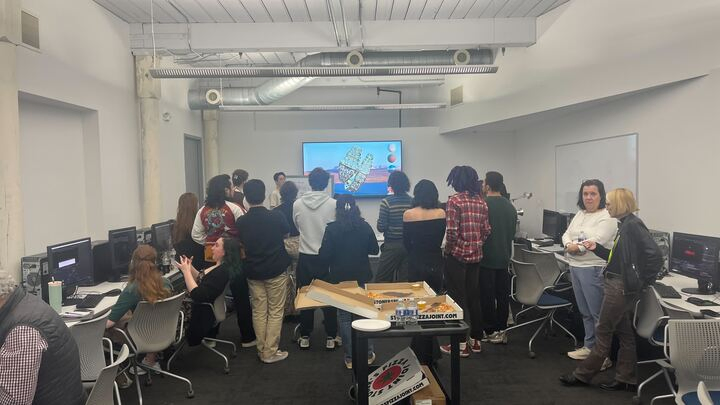
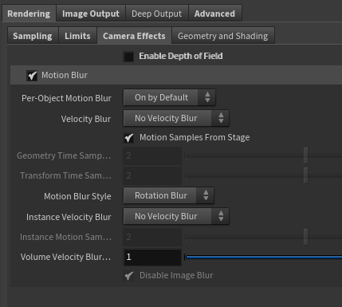
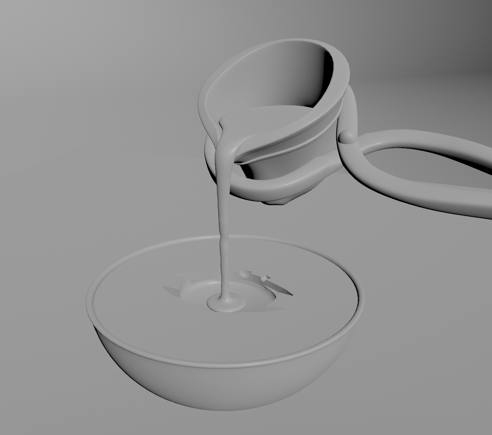
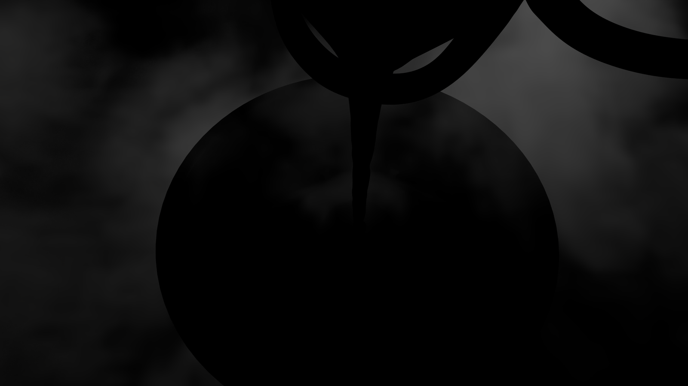

Week9
Team Member
Mar 8
Bomin Kim (Fx)
Caleb Stovall (3D/2D)
Mojie Tang (Fx)
Sydney Relkin (Comp)
Yiqi Zheng (Fx)
SCAD X HARBOR - Week 9
Hello, this is my nigth week of the Scad x Harbor blog!
Last week, we were so excited that mentors came to our class in person and provided us with a lot of useful suggestions for our projects. I was also lucky to receive feedback on my portfolio from Olivia. Additionally, Billy gave us really useful and comprehensive lessons on lighting and rendering. All of the information was extremely helpful.


This week, according to Kyle's suggestion, I added motion blur for the molten fluid.

Another thing is our poster; I will mainly focus on my shot of molten platinum. I will discuss the problems I encountered and the solutions I used. I will provide the information I need to put in the poster, and Mojie will combine all the information in the end. This is what I want to put in our poster.
Problem:
Since the simulation is for molten platinum used in a watch strap, achieving a controlled and continuous liquid flow was challenging. The flow had to be steady but not excessive, ensuring a realistic and visually appealing effect.
One major difficulty was finding the right pot angle and circular emission size to maintain a smooth, uninterrupted stream. If the emission was too large, the liquid overflowed unnaturally; if too small, the flow became inconsistent. Another challenge was preventing the liquid edges from breaking apart or appearing chunky. Additionally, balancing fluid behavior with performance was crucial, as high particle counts significantly slowed down the simulation.




Method:
To achieve a more detailed and controlled pouring effect, I adjusted the angle of the pouring cup and reduced the point separation in the pointsfromvolume node, allowing for finer particle distribution. To further refine the fluid’s appearance, I changed the operation to Gaussian in the vdbsmoothsdf node, which helped create a smoother liquid surface.
Initially, I set the sphere to continuously emit particles to generate the liquid. However, when the pot tilted, the liquid volume became excessive, leading to an unnatural flow and significantly slowing down the simulation. To resolve this, I switched to duplicating multiple spheres and having each emit particles only once. After multiple iterations and refinements, I achieved a stable and visually accurate liquid behavior that matched my intended effect.
These are different layers for my shot (4K).


